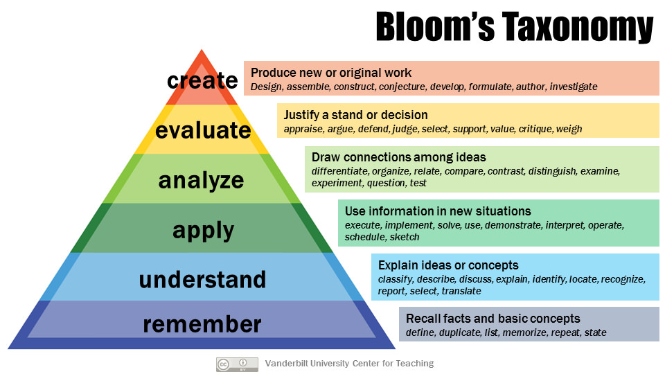

Praktikum IS
Block Machine Learning
https://djcordhose.github.io/ai/2018_haw_ml_praktikum.html
### Unser Ziel is zumindest 'understand' <small> Praktikum soll das durch Umsetzung fördern </small>  <small> https://cft.vanderbilt.edu/guides-sub-pages/blooms-taxonomy/ </small>
### How learning works <img src='img/how_to_learn.jpg' height="500px"> <small> @shancarter #openvisconf </small>
## Bewertung * _Stufe 3_: 13 bis 15 Punkte * _Nicht-offensichtliche komplexe_ Eigenschaften von Konzepten der künstlichen Intelligenz wurden erkannt * und zwar _ausreichend abstrakt und ausreichend verallgemeinert_. * Ein etwaiges Anwendungsumfeld wurde _korrekt, angemessen und effektiv_ analysiert und modelliert. * _Stufe 2_: 9 bis 12 Punkte * _Einzelne nicht-offensichtliche_ Eigenschaften von Konzepten der künstlichen Intelligenz wurden erkannt. * Ein etwaiges Anwendungsumfeld wurde _korrekt_ und _mit kleinen Einschränkungen angemessen_ analysiert und modelliert. * _Stufe 1_: 5 bis 8 Punkte * _Wenige recht offensichtliche_ Eigenschaften von Konzepten der künstlichen Intelligenz wurden erkannt. * Ein etwaiges Anwendungsumfeld wurde _in einfacher Weise_ so analysiert und modelliert, dass praktische Tests möglich sind.
### Praktikum: Organisatorisches * Ziel des Praktikums: etwas neues lernen * Wir sind jeden Montag zu sprechen * von 10:00 - 12:00 (12.81) oder * 17:30 - 18:30 (Vorlesungsraum) * Fragen und Diskussion * Praktikumsabnahme
### Letzter Abnahme-Termin für die Praktika * _Suche_: KW21, 23.05.2018 * _Lernen_: KW24, 11.06.2018 * _Natürliche Sprache_, erste Prüfungen möglich: KW26, 25.06.2018
### Prüfungstermine * KW26, 25.06.2018 * KW27 * KW29
### Update: Prüfungen * Zwei Studierende haben ein gemeinsames Basisthema vorbereitet mit eigener, individueller Erweiterung. * Die Basis wird gemeinsam vorgetragen, also jeder mit ca. 50% Redeanteil. (5 Minuten) * Danach trägt jeder seine eigene Ergänzung vor. (2 x 5 Minuten). * Gesamtzeit 4 x 15 = 60 Minuten. * Die Ausarbeitungen sind individuell. * Die Noten werden auch individuell vergeben. * Einzelprüfung möglich, dann 7,5 bis 10 Minuten pro Thema.
## Install ML Software ### Local Installation: * https://www.anaconda.com/download/ * _Important_: Install verison 3.x * git clone git@github.com:DJCordhose/haw.git * cd haw/notebooks * jupyter notebook ### Or clone on Azure Notebooks: * https://notebooks.azure.com/djcordhose/libraries/ml-haw
### Alternative besonders für CNNs: Colab https://medium.com/tensorflow/colab-an-easy-way-to-learn-and-use-tensorflow-d74d1686e309 <small> Tolles Beispiel für Fashion MNIST: https://medium.com/tensorflow/hello-deep-learning-fashion-mnist-with-keras-50fcff8cd74a <br><br> Trainiert auf Colab in wenigen Minuten: https://colab.research.google.com/github/margaretmz/deep-learning/blob/master/fashion_mnist_keras.ipynb </small>
### Mögliche Aufgaben auf diesem Notebook * Andere Architektur von Hand aufbauen (andere Layers, andere Abfolge, mehr oder weniger Filter) * Overfitting besser verhindern * Mit anderen Daten trainieren * Standard-Architekturen verwenden * https://medium.com/towards-data-science/neural-network-architectures-156e5bad51ba * https://keras.io/applications/ * Schwierig, da * Bildgröße meist nicht direkt zum Modell passt * Eigener Classifier angehängt werden muss
### Tolle Sammlungen von Notebooks Als Inspiration oder Startpunkt für eigene Projekte * https://github.com/ageron/handson-ml * https://github.com/fchollet/deep-learning-with-python-notebooks
Mögliche Aufgaben für Praktium
### Beispiel Stufe 1: Wie funktionieren Waymos selbstfahrende Autos Nachvollziehen und recherchieren <small> https://www.theverge.com/2018/5/9/17307156/google-waymo-driverless-cars-deep-learning-neural-net-interview </small>
## Classic ML
### Beispiel Stufe 1: Random Forest und Adaboost anwenden * Dasselbe wie bei Decision Trees für Random Forest und Ada Boost machen * Parameter herausfinden * Algorithmen verstehen <small> Notebook: 3-sklearn-decision-trees </small>
### Beispiel bis Stufe 3: Regulasierung auf Neuronalen Netzwerken * Dropout: https://machinelearningmastery.com/dropout-regularization-deep-learning-models-keras/ * BatchNormalizatiion: https://towardsdatascience.com/batch-normalization-in-neural-networks-1ac91516821c * L1 und L2: https://towardsdatascience.com/regularization-in-machine-learning-76441ddcf99a * Zum experimentieren mit L1 und L2: http://playground.tensorflow.org * Allgemeine Hinweise: https://machinelearningmastery.com/improve-deep-learning-performance/ <small> </small>
### Beispiel Stufe 2-3: Wende Machine Learning auf eine eigene Problemstellung an <small> </small>
### Beispiel bis Stufe 2: Erarbeite dir die Strategie Support Vector Machines Nutze die Implementierung von sklearn und versuche einen besseren Wert zu erreichen als mit RandomForest <small> Ausgehend von Notebook: 3-sklearn-decision-trees </small>
## Deep Learning / CNNs
### Beispiel bis Stufe 3: Ein Convolutional Neural Network mit eigenen Bilddaten trainieren Aufwändig, da lokale installation oder tensorflow.js nötig und eigene Bilder besondere Herausforderung * if you are looking for a handy python script for 'searching' and 'downloading' hundreds of Google images to the local hard disk for you next DL project, that's the one: https://t.co/4nh3hnoZr1 (https://twitter.com/rasbt/status/982822969947848704?s=03) * Pokemon Images: https://www.pyimagesearch.com/2018/04/16/keras-and-convolutional-neural-networks-cnns/
### Hinweise: Ein Convolutional Neural Network mit eigenen Bilddaten trainieren * Man braucht mind. 5000 Bilder pro Kategorie * Das hat man oft gar nicht. Dann kann man künstlich Variationen erzeugen * passende Architektur wählen (eigene, z.B. ResNet, ImageNet) * Evtl. auf ImageNet vortrainierte Modelle nehmen und nur die letzten Layers nachtrainieren * Auch mit sehr guter Hardware können Experimente Stunden dauern wenn die Bilder hoch aufgelöst sind * Mit Teildaten Overfitten, um zu sehen, ob das Modell überhaupt genug Kapazität hat
### Beispiel bis Stufe 3: Object Detection <small> https://www.datacamp.com/community/tutorials/object-detection-guide <br> https://towardsdatascience.com/deep-learning-in-your-browser-a-brisk-guide-ca06c2198846 <br> https://github.com/ModelDepot/tfjs-yolo-tiny </small>
### Beispiel bis Stufe 2: Experimente, wie funktionieren CNNs? <img src='img/building-blocks.jpg' height="400px"> <small> https://distill.pub/2018/building-blocks/ </small>
### Beispiel Stufe 1: Neural Network tunen * Netzwerk für Problemstellung optimieren. * Kannst du es verbessern? * Woran erkennst du eine Verbesserung? * Wie klein kann man das Netzwerk machen? <small> 4-tf-keras-nn / 4-keras-tensorflow-nn </small>
Reinforcement Learning
### Beispiel bis Stufe 3: Experimente aus dem Open AI gym Python Kenntnisse notwendig, alle Schwierigkeitsstufen denkbar https://gym.openai.com/envs/#classic_control
### Beispiel bis Stufe 3: Ein eigenes Browserspiel mit DQNs (Reinforcement Leearning bauen) Projekt braucht kein Setup, man sollte JavaScript-Kenntnisse haben http://web.sfc.keio.ac.jp/~t15704yn/falling/index.html https://github.com/seann999/dodge_tfjs
### Tutorial: Write an AI to win at Pong from scratch with Reinforcement Learning. * Unklar welche Stufe, für die Prüfung müsstet ihr euch da noch etwas ausdenken https://medium.com/@dhruvp/how-to-write-a-neural-network-to-play-pong-from-scratch-956b57d4f6e0
### Beispiel bis Stufe 3: Atari spielen lernen auf dem eigenen PC aufwändig, lokale Installation und GPU notwendig, aber Code und Blogpost sind vorhanden <small> Post: https://eng.uber.com/accelerated-neuroevolution/ <br> Code: https://github.com/uber-common/deep-neuroevolution/tree/master/gpu_implementation </small>
### Beispiel bis Stufe 3: AlphaGo Zero nachbauen <a href='https://applied-data.science/static/main/res/alpha_go_zero_cheat_sheet.png' target="_blank"> <img src='img/rf/alpha_go_zero_cheat_sheet_small.png' height="300px"> </a> aufwändig, lokale Installation notwendig, aber Code und Tutorial ist vorhanden <small> Tutorial: https://medium.com/applied-data-science/how-to-build-your-own-alphazero-ai-using-python-and-keras-7f664945c188 <br> Code: https://github.com/AppliedDataSciencePartners/DeepReinforcementLearning <br> Technische Erklärung: http://tim.hibal.org/blog/alpha-zero-how-and-why-it-works/ </small>
### Beispiel bis Stufe 3: World Model nachbauen <a href='https://applied-data.science/static/main/res/alpha_go_zero_cheat_sheet.png' target="_blank"> <img src='img/rf/world-models.gif' height="300px"> </a> aufwändig, lokale Installation notwendig, aber Code und Tutorial ist vorhanden <small> Tutorial: https://medium.com/applied-data-science/how-to-build-your-own-world-model-using-python-and-keras-64fb388ba459 <br> Code: https://github.com/AppliedDataSciencePartners/WorldModels </small>
Unsupervised Learning
### Beispiel bis Stufe 3: UMAP selbst erarbeiten und erklären
### Beispiel bis Stufe 2: Finde ein eigenes Beispiel für Clustering und probiere unterschiedliche Strategien aus * mit den Parametern der bekannten Algos experimentieren * mit welchen Paramtern * Clustering. Anderer Algo, Birch. <small> Notebook: k-means_vs_dbscan, plot_cluster_comparison </small>
### Beispiel bis Stufe 3: Implementiere einen eigenen Clustering Algorithmus * den Algorithmus sollte es so noch nicht geben * wie unterscheidet er sich von DBSCANN und k-means?